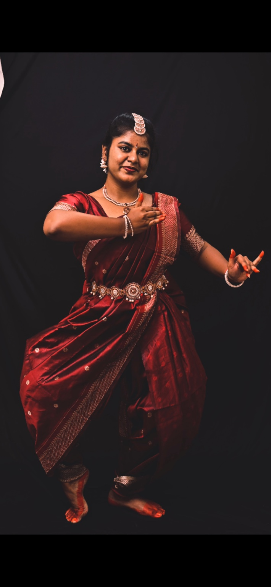
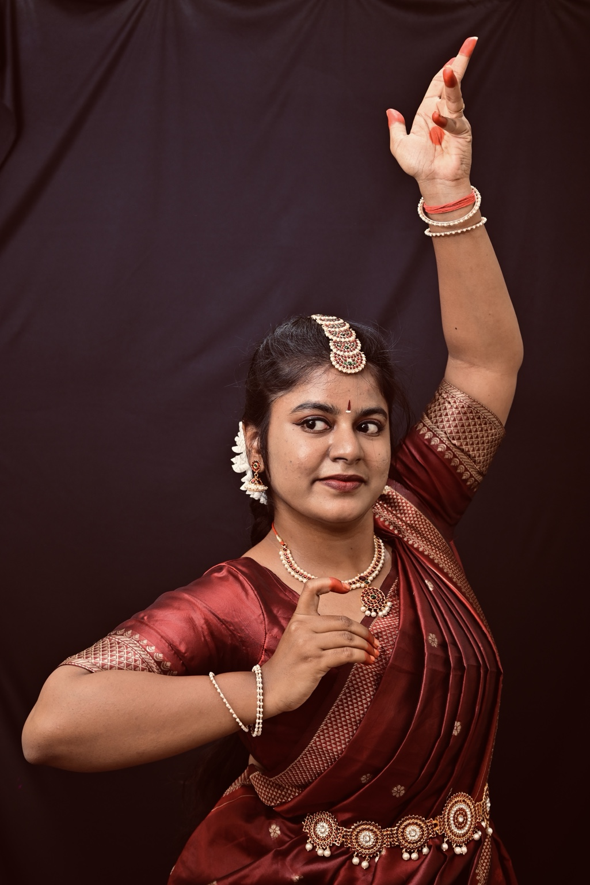
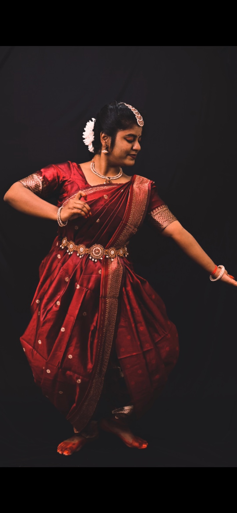
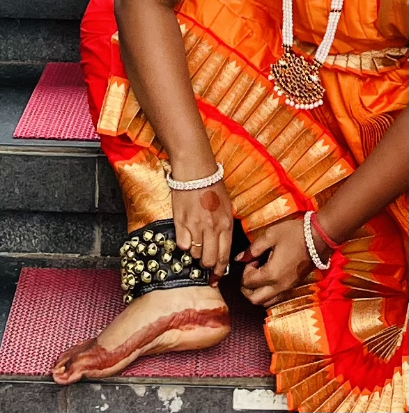
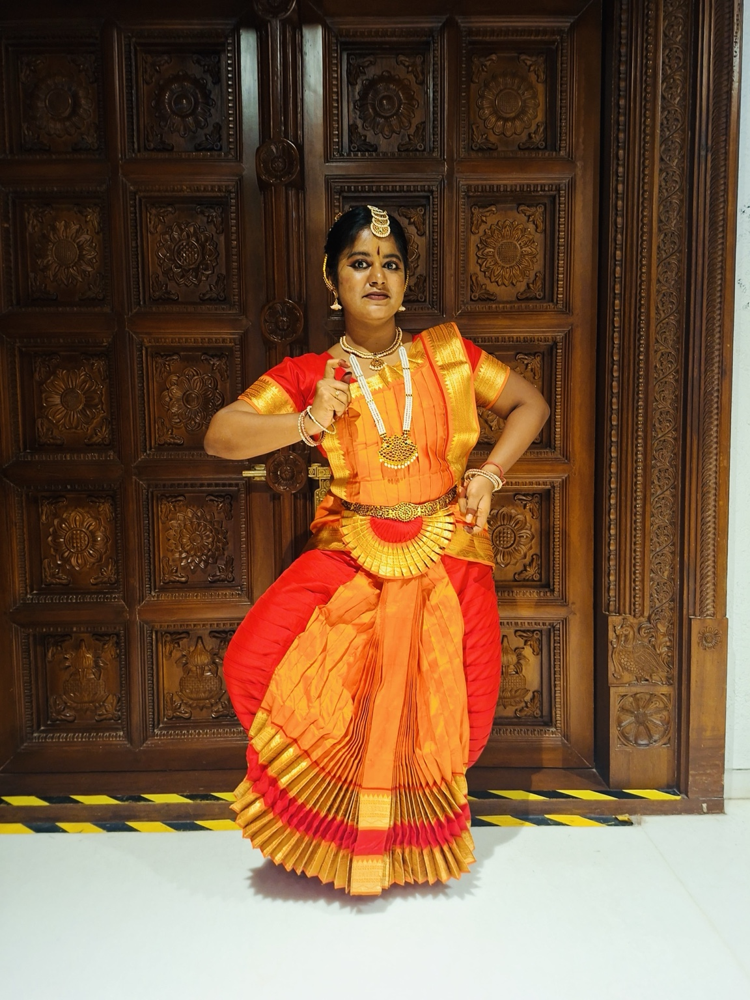
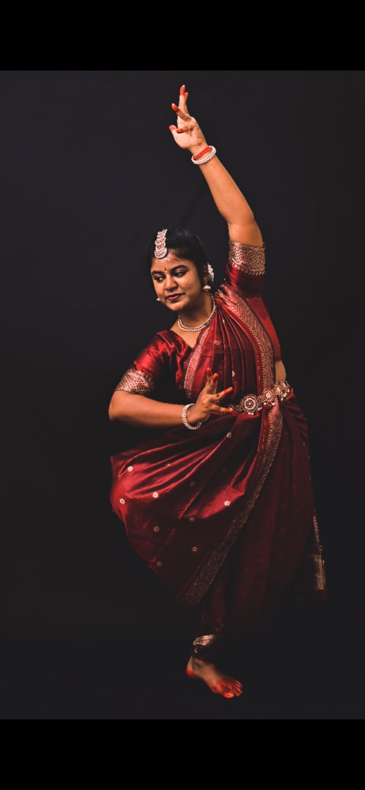
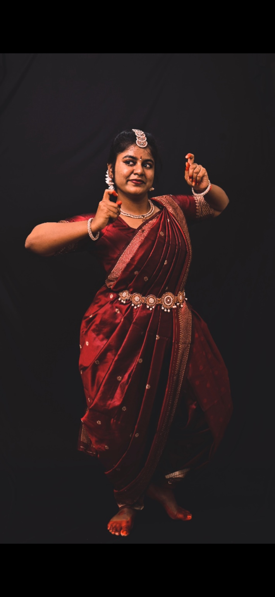

Return to dance
Restarted my Bharatanatyam journey after six years away.

A PERSONAL BHARATANATYAM JOURNEY
A story of a little girl, a guru who planted a seed, six years away from the stage — and the joy of finding dance again.
↓ Begin the journey“Dance is my entire life. There is a calmness I feel when I do it — a feeling that is difficult to put into words.”
When I was 10, I stepped into the world of Bharatanatyam. I didn't know then how deeply dance would become a part of me.
My guru, Radhika Teacher, was the reason for this entire beginning. She planted the first seed of dance in me — and that seed stayed.
I continued dancing for five years and performed on many occasions. Those early years gave me something I didn't fully understand at the time: a connection that would wait patiently for me.

THE PAUSE
After completing my 10th, I had to leave dance behind for higher studies. I moved to another city and stayed in a PG to pursue my education.
Six years passed between the dancer I once was and the dancer I was becoming.
AND THEN, I CAME BACK
When my studies were done and I got placed in a good company as a software professional, I found myself thinking about dance again.
Six years after I had stopped, I started again.
Restarting Bharatanatyam was probably one of the best decisions I have made.



THE NEXT CHAPTER
I restarted my journey with Tapasyasiddhi School of Bharatanatyam, under Vidula Sawant Ma'am, under the guidance of Guru Sanyogita Patil.
Coming back to dance wasn't simply about picking up where I left off. It was about beginning again with a new perspective, new discipline and a deeper love for the art.
I am now pursuing my Bharatanatyam studies through Akhila Bharata Gandharva Mahavidyalaya.
Restarted my Bharatanatyam journey after six years away.
Completed the examination and secured First Class.
Continuing to learn, practise, perform and deepen my understanding of the art.
Every photograph holds a little piece of the journey.


05 / TODAY
Today, Bharatanatyam is not a chapter I left behind. It is a part of who I am — something I want to keep learning, understanding and living.
There is still so much to learn, so much to practise and so much to express. This portfolio is my little archive of that journey.
FROM A TEN-YEAR-OLD GIRL
TO THE DANCER I AM BECOMING.